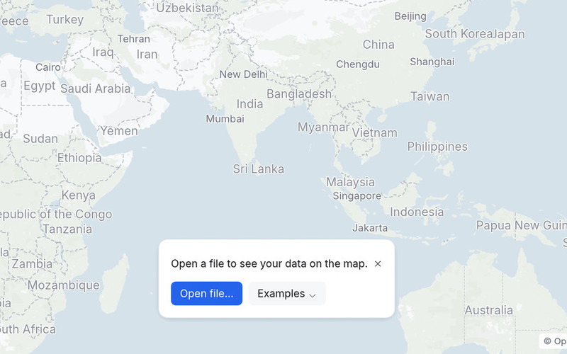
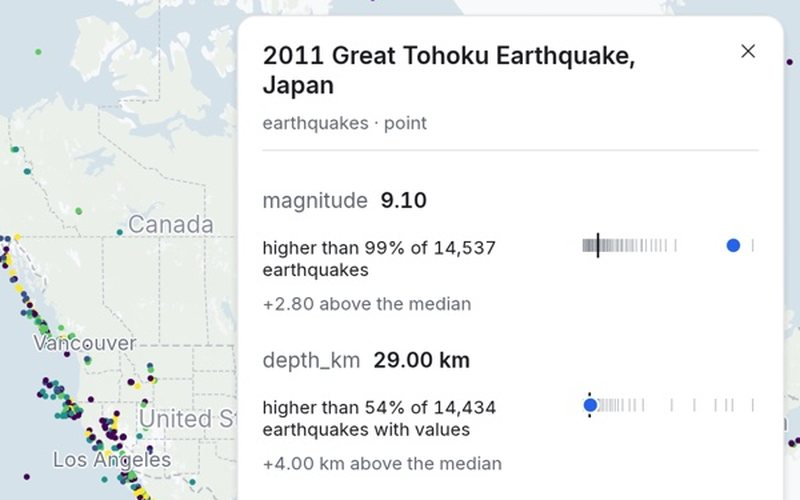
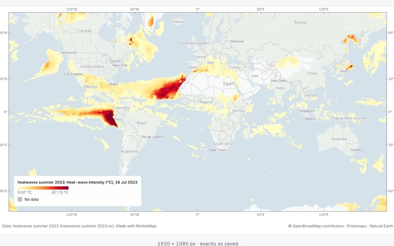
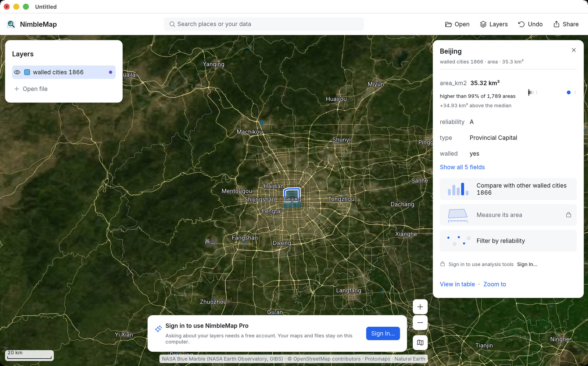
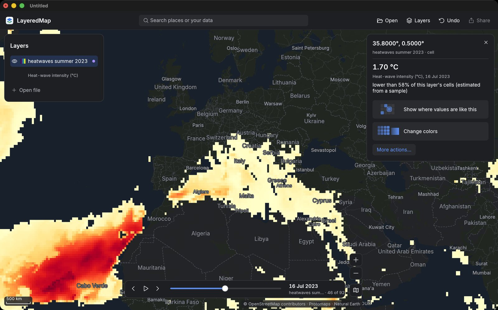

Tyfoons en orkanen
4.999 stormbanen sinds 1980, over alle oceanen, uit het IBTrACS-archief van NOAA. Zoek Haiyan op, kleur de banen naar windsnelheid en zie waar de zwaarste stormen voorkomen.
IBTrACS v04r01 · 1980–2026Een kaartapp voor nieuwsgierigen
NimbleMap is voor mensen die van kaarten houden maar nooit met GIS hebben gewerkt. Dubbelklik op een bestand met plaatsen, routes of klimaatgegevens, en het verschijnt op de kaart. Klik op een plaats of een object om te zien wat het interessant maakt: de zwaarste storm, de grootste ommuurde stad, de heetste week.
Gratis · macOS · Engels, met Chinese plaatsnamen

Zware aardbevingen sinds 1900, gekleurd naar magnitude
Waarom het anders is
QGIS en ArcGIS zijn krachtige programma's om met ruimtelijke gegevens te werken. Maar wie ze voor het eerst opent, vindt zelfs een eenvoudige kaart maken soms lastig. Honderden tools en instellingen staan tussen de gebruiker en de kaart. Hoe zou GIS eruitzien als het was ontworpen door de mensen die de iPhone maakten? Welke tools zouden ze houden, welke verbergen en welke helemaal schrappen? NimbleMap verkent dat idee. Het brengt de nuttige delen van GIS samen in een kaartapp die iedereen kan gebruiken die nieuwsgierig is naar plaatsen.
De meeste GIS-software begint met tools. NimbleMap begint met vragen. Klik op iets op de kaart, en het vertelt je wat het is en hoe het zich verhoudt tot de rest van zijn kaartlaag.
Elk getal komt uit al je gegevens, niet alleen uit wat toevallig op het scherm te zien is. Kunnen sommige records niet op de kaart worden geplaatst, dan vertelt NimbleMap je hoeveel en waarom. Je oorspronkelijke bestanden blijven ongewijzigd.
Je kunt elke stap ongedaan maken. Bij elk resultaat hoort bovendien een uitleg in gewone woorden over hoe het tot stand kwam.
NimbleMap is een onafhankelijk project en is niet verbonden aan Apple, Esri of het QGIS-project.
Hoe het werkt
Een kaart in NimbleMap bestaat uit kaartlagen die op een achtergrondkaart liggen, net als vellen calqueerpapier. Open een bestand en het wordt een nieuwe kaartlaag. Er is geen installatiewizard, geen project om aan te maken en geen lege gereedschapskist om je weg in te zoeken.

Sleep er een CSV met coördinaten, een GeoJSON, een Shapefile, een GeoPackage, een GeoTIFF of een NetCDF-klimaatbestand in. Moet NimbleMap iets aannemen, zoals welke kolommen de coördinaten bevatten, dan vertelt het je wat het heeft aangenomen en kun je dat wijzigen.

Klik op een stad, een storm of één cel in een klimaatrooster. NimbleMap laat eerst zien wat het is en hoe het zich verhoudt tot de rest van zijn kaartlaag: “hoogste van 4.999” of “lager dan 80% van de rest”. De tools die ertoe doen, verschijnen als je ze nodig hebt.

Kleur je kaart naar een waarde, filter de gegevens en exporteer het resultaat als afbeelding. Voeg een titel, legenda, schaalbalk en bronvermelding toe. Kies een formaat dat past op een presentatiedia, een A4-pagina of een vierkant bericht.
Ingebouwde voorbeelden
NimbleMap wordt geleverd met acht voorbeeldsets, met één klik beschikbaar onder Examples (Voorbeelden). Een paar ervan:
4.999 stormbanen sinds 1980, over alle oceanen, uit het IBTrACS-archief van NOAA. Zoek Haiyan op, kleur de banen naar windsnelheid en zie waar de zwaarste stormen voorkomen.
IBTrACS v04r01 · 1980–2026
1.789 stadsmuren uit het laatkeizerlijke China, waaronder de hoofdstad, districtsstadjes en Mantsjoe-garnizoenen. Zie waar deze steden lagen, getekend op satellietbeelden.
Xue et al. 2021 · CC BY 4.0
Dagelijkse hittegolfintensiteit over de hele wereld van juni tot en met augustus 2023, opgeslagen in een NetCDF-klimaatbestand. Verschuif de tijdbalk of druk op Play (Afspelen) om te zien hoe hittegolven zich in de loop van de zomer ontwikkelden en verplaatsten.
Copernicus GDO (JRC) · CC BY 4.0Ook inbegrepen: zware aardbevingen sinds 1900, vulkanen, luchthavens, energiecentrales, en steden, landen en hoogte van de hele wereld.
Gratis en Pro
Met de gratis versie kun je ruimtelijke gegevens openen, over elkaar leggen, opmaken en delen. NimbleMap Pro voegt een assistent toe waarmee je in gewone woorden vragen stelt over je kaartlagen.
Gratis te downloaden
Alles uit Gratis, plus:

Downloaden
NimbleMap is gratis voor Macs met Apple silicon en macOS 13 of nieuwer. Dubbelklik op een Shapefile, GeoJSON, CSV, GeoTIFF of ander ondersteund bestand om het op de kaart te openen. Je bestanden blijven op je Mac. Er komt een versie voor Windows aan.
NimbleMap is gebouwd op RustGIS.